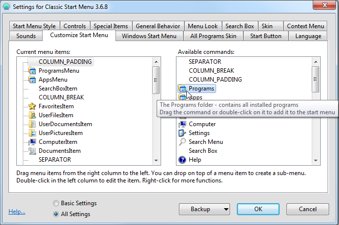

Classic Start Menu
Classic Start Menu
Classic Start Menu is a
clone of the original start menu, which you can find in all versions of
Windows from 95 to Vista. It has a variety of advanced features:
- Drag and drop to let you organize your applications
- Options to show Favorites, expand Control Panel, etc
- Shows recently used documents. The number of documents to display
is customizable
- Translated in 35 languages, including Right-to-left support for
Arabic and Hebrew
- Does not disable the original start menu in Windows. You can
access it by Shift+Click on the start button
- Right-click on an item in the menu to delete, rename, sort, or
perform other tasks
- The search box helps you find your programs without getting in the way of your keyboard shortcuts
- Supports jumplists for easy access to recent documents and common tasks
- Available for 32 and 64-bit operating systems
- Has support for skins, including additional 3rd party skins. Make your own!
- Fully customizable in both looks and functionality
- Support for Microsoft’s Active Accessibility
- Converts the “All Programs” button in the Windows menu into a cascading menu (Vista and Windows 7)
- Implements a customizable start button for Windows 8
- Can show, search and launch Windows Store apps (Windows 8)
- And last but not least – it's FREE!
If you have used the start menu in older versions of Windows you’ll
feel right at home:

Press the Windows key or click on the orb in the corner of the
screen to open the start menu.
Hold down Shift while clicking on the orb to access the operating
system's own
start menu.
Click on an item to execute it.
Drag a program to change the order of the programs in a menu, or to
move it to another folder.
Right-click on an item to rename it, delete it, explore it, sort the
menu, or perform other tasks.
Right-click on the orb to edit the settings for the start menu, to view this help file, or to
stop the start menu.
Settings
Version 2.9.0 introduces a new
much more powerful system for editing the settings. All settings are
accessible through a single UI, instead of dealing with ini files:

You can choose from seeing only the basic settings, or all available
settings. Hover over each setting to see a description of what it's for.
Every setting has a default value. The default value can be constant,
or it may depend on the current system settings. Once you edit a
setting it becomes "modified" and is shown in bold. To revert to the
default value, right-click on the setting.
You can save the settings to an XML file, and later load them back.
Press the Backup button to access these functions. From there you can
also reset all settings to their default value.
Most settings will be changed immediately as you edit them. For example
you can edit the start menu, then while the Settings dialog is open,
access the start menu to see the changes. Small number of settings will
require you to exit the start menu before you can see the change.
Note: All Settings windows are resizeable. Resize them and place them where you want them to be. They will remember the new position.
Click on the Customize Start Menu tab to customize the menu items:

The column on the left shows the current menu items,
and the column on the right lists the items you can add to the menu. You can drag and drop items from the right column to the
left. You
can rearrange the items by dragging them up and down. If you drop one item inside another you will create a sub-menu.
Hover over each items to see a short description of what it does. Right-click on each
item to access more functions (like Delete, Rename, etc). From the
right-click menu you can also reset the whole start menu to the original state.
Each item in the left column must have a unique name. This is the
identifier of the item and can only contain English letters, digits and
underscore. Some items (like SEPARATOR) cannot be renamed. By
convention, simple menu items are called "Item", and sub-menus are
called "Menu". This is just a convention and not a requirement. You can
name your items whatever you want, as long as the name is unique.
After you place a new item in the start menu, you can edit it's attributes. Double-click on the item to edit:

Here you can select a command for the item, its text, icon and other attributes. Press the Restore Defaults button to get the default text and icon for the chosen command.
The command can be:
- one of the predefined commands - from the dropdown
- custom executable string
- this can be a name of a program and its arguments, or even a URL
(like http://www.google.com). Environment variables like %SystemRoot% are supported
- left blank - then if the link attribute is used, it will act as a command
The link can be a path to a file or a folder. If it is a file, that
file will be executed. If it is a folder, that folder will be opened as
a sub-menu. Some menu items (like Programs and Favorites) have an implicit
link attribute, so for them the Link box will be disabled.
The icon can be:
- left blank - then if the link attribute points to a file or a folder, the icon of that file or folder will be used
- resource file,icon ID - for example %windir%\notepad.exe,2. Do not leave space between the file name and the comma. Make sure you are using the icon's resource ID, and not the icon's index. For best results use the [...] button next to the icon box
- ,icon ID - same as above, but the resource file is the ClassicExplorer.dll itself. This is useful when referring to Classic Explorer's own icons
- icon file - for example C:\Program Files\Mozilla Thunderbird\Email.ico
- none - this will use a blank icon
If the label or the tip attribute start with $ (dollar sign), then the system will treat it as a name of a string in the StartMenuL10N.ini
file. The actual text will depend on the current language setting. This
is useful when creating a menu that can be used by multiple languages.
If you check "Insert Sub-items as Buttons", instead of showing the menu
item itself, the start menu will show the sub-items as a row of
buttons. By default the buttons are centered. You can align them to the
left by adding a separator as the last item, or align them to the right
by adding a separator as the first item. One possible use is to replace
the shutdown menu item with
separate buttons for shutdown, restart, log off, etc.
Administrative Settings
The settings are
per user and are stored in the registry. By default every user can edit
all of their settings. An administrator can lock specific settings, so
no user can edit them:

In this example the setting "Enable accessibility" is locked to always
be checked and can't be changed by any user. This is achieved
by adding the setting to the HKEY_LOCAL_MACHINE\SOFTWARE\IvoSoft\ClassicStartMenu registry key. Create a DWORD value called "EnableAccessibility" and set it to 1.
The easiest way to know the registry name of a setting and its value is to modify it, and then look it up in HKEY_CURRENT_USER\Software\IvoSoft\ClassicStartMenu.
Sometimes you may want to lock a setting to its default value, but you
don't know what the default value is. Then create a DWORD value and set
it to 0xDEFA.
There is also a global setting "EnableSettings". Set it to 0 in the
registry to prevent the users from even opening the Settings dialog:

The start menu also checks most of the group policies set by the administrator. Run gpedit.msc and go to User Configuration -> Administrative Templates -> Start Menu and Taskbar. From there you can disable Run, Shutdown, Help, and other features. (Not available on Home versions of Windows).
More About Skins
You can pick from the many pre-installed skins:

Or you can download and install additional 3rd party skins (from Source
Forge or from another place). After you download a new skin you
must copy the .skin file to the Skins directory – usually C:\Program
Files\Classic Shell\Skins. After that it will be available in the settings.
Note: Some skins may be specifically designed for
Classic, Basic, or Aero mode. For example an Aero skin may require
glass support any will look weird if the Classic or Basic theme is
selected. Some Aero skins may also require specific glass color to be
selected.
You can create your own skin. You will need an image editor that
supports alpha channel (like Gimp or Photoshop) and a tool to edit
resource files (like Resource Hacker or Visual Studio). And of course
some talent for graphical design :). Read the Skinning Tutorial before you begin.
Cascading All Programs menu (Vista and Windows 7)
The classic start menu can also attach to the "All Programs" button in
the Windows start menu. When you press All Programs you will get a
cascading menu of all programs, similar to Windows XP:

You can enable the cascading menu by checking Cascade All Programs menu in the Windows Start Menu tab of the Settings. You can also pick a separate skin for the sub-menus from the All Programs Skin tab.
Search


The search box lets you search the contents of the start menu and the
programs in the PATH environment variables. You can have the search box
appear as a normal menu item and then you can get to it using the
up/down arrow keys. You can choose to have the search box selected by
default when you open the start menu. Or you can choose to activate the
search box only with the Tab key, so until you press Tab you can use
the keyboard for navigation as if the search box is not there.
To use the search, start typing the name of the program until you see
it in the list of results. Use the up/down arrow keys to select from
the list. Press Enter to execute.
You can customize the search feature from the Search Box tab in the Settings.
- Select if you want the search to look in the Control Panel or the system PATH
- Select if you want the search to match any part of the word or only the beginning of the word
- Select if you want the start menu to track which programs you use most often and put them at the top of the search results
- Limit the number of items to display in the search results. If
there are more results than that, the list will not show up. Instead
you will get a small icon that looks like >> and you can press Tab to see the full list of results. Or you can continue typing until you narrow down the list of results
- Enable auto-complete. When this is enabled, if you start typing
something that looks like a path (like C:\Windows, etc) you will get an
auto-complete list for typing a command you can execute, instead of
seeing a sub-menu of the search results
Note: For the search to
work you must have a search box item in your menu. If you are upgrading
from an older version than 2.9.3, and have customized the start menu,
you may be missing the search item. Go to the Customize Start Menu tab
in the Settings and drop Search Box into your menu. The search box
works best when it is in the main menu, but you can place it in a
sub-menu if you really want to.
You can register additional "search providers", which you can use to
search for the text from the search box. You run the search program
either by selecting it from the menu, or by
pressing Alt+key. In this example use Alt+A for Agent Ransack and Alt+G
for Google Search.

This is done by adding sub-items of the SearchBoxItem in the Customize Start Menu tab:

Open each of the sub-items and enter a command to start the search program. If you use %1 in the command, it will be replaced by the contents of the search box. If you use %2
it will be replaced by the url-style encoded search text. Enter a
label, tip, and icon to complete your menu entry. In the label text you
can use & to mark the accelerator character (for example Search with &Google).
Here are a few possible commands:
Search with Agent Ransack: "C:\Program Files\Agent Ransack\AgentRansack.exe" -r -f "%1"
Search with Everything: "C:\Program Files\Everything\Everything.exe" -search "%1"
Search with Google: http://www.google.com/#q=%2
Search with Bing: http://www.bing.com/search?q=%2
Custom Start Button (Windows 7 and 8)
Because
Windows 8 doesn't have a start button on the taskbar, Classic Shell
implements its own. You can choose from Classic, Aero or Metro look, or
you can make your own. For a custom start button you need an image that
contain the 3 states of the button - normal, hot and pressed:

The image must be a 32-bit PNG or BMP. By default the width of the
image determines the size of the button. You can override that by
entering a custom width.
You can find many custom start button images online. Here are few examples:
http://www.sevenforums.com/themes-styles/34951-custom-start-menu-button-collection.html
http://www.sevenforums.com/customization/78291-big-group-custom-start-orbs.html
http://tutoriales13.deviantart.com/art/Orbs-153450418
Localization
The user interface (except the Settings dialog box) is localized in all 35
languages available for Vista and Windows 7.
The Settings dialog box is translated in a smaller number of languages.
The default installation contains only English. More languages can be
downloaded from the main Classic Shell page. Make sure you download the translation package for the exact version of Classic Shell.
Command Line
The ClassicStartMenu.exe supports 4 command line parameters: -open, -toggle, -togglenew, and -settings.
The first two do what the name suggests. One opens the classic start menu, the other
toggles it. You can use the parameters to create a shortcut in your
QuickLaunch bar that opens the start menu. Or to set a hotkey in
programs such as WinKey.
The third one "-togglenew" toggles the new start menu. It is useful if
you want to map the new start menu to a hotkey and use the default Win
key for the classic menu.
Use "-settings" to open the start menu settings. This is useful for creating a shortcut for editing the settings.
Accessibility
The start menu supports screen readers like JAWS,
or Microsoft's Narrator. If the accessibility support causes problems it can be disabled from the General Behavior tab of the Settings.